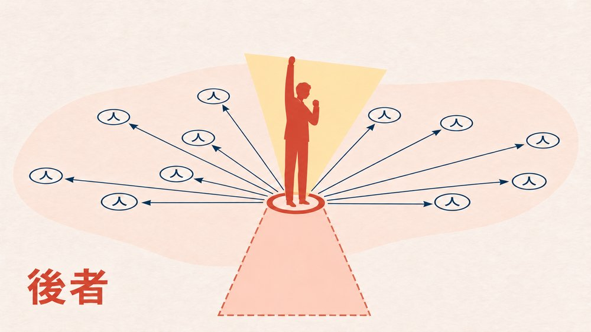

キャライメージ

それぞれのイメージ
概要
前者のほうが客観的で気ぃ使いで、穴が少ない。後者のほうが主観的で凸凹やon/offの差が大きい。
前者と後者の対象的なコンビ例
- ダウンダウン：まっちゃん(前)×浜ちゃん(後)
- おぎやはぎ：矢作さん(前)×小木さん(後)
- バナナマン：設楽さん(前)×日村さん(後)
- ナイナイ：矢部さん(前)×岡村さん(後)
- オードリー：若林さん(前)×春日さん(後)
- オリラジ：藤森さん(前)×中田さん(後)
- ハライチ：澤部さん(前)×岩井さん(後)
- 霜降り明星：粗品さん(前)×せいやさん(後)
前者のイメージ
前者の特徴は「いつでも全体を見ていること」である。視野が「閉じていない」のが特徴で、常に「強制Wi-Fi状態」にある。関係性の中に自分を位置づけ、ペース配分を考えて動く。
特徴：
- そつがない
- 見えちゃうからフォローや先回り
- 要点を捉えるのが得意
- 先を読んで計算する
- 言動に意図がある
- 減点が少なく安定的に結果を出す
- 自分や他人の安全に敏感
- 「ふつうは～」と言う
後者のイメージ

後者は「顔面に大きなカメラやライトが点いているイメージ」で、アングルは一方向。自分があって世界がある。視野が変動しやすく、集中しやすく、主観的である。
特徴：
- 天然
- 死角が多いが一点集中的能力が高い
- 能力の凸凹が大きい
- 自分の動機や興味で動く
- 習得に時間がかかり後で伸びる
- 先をあまり読まない
- 意図は読まない
- 長所であり短所でもある特徴が多い
補足
前者・後者は「仕組み」の話であり、AndroidかiOSかのような違い。これらの特徴は典型例であり、必ずしも当てはまるわけではなく、相対的な特徴(差)として理解することが重要である。